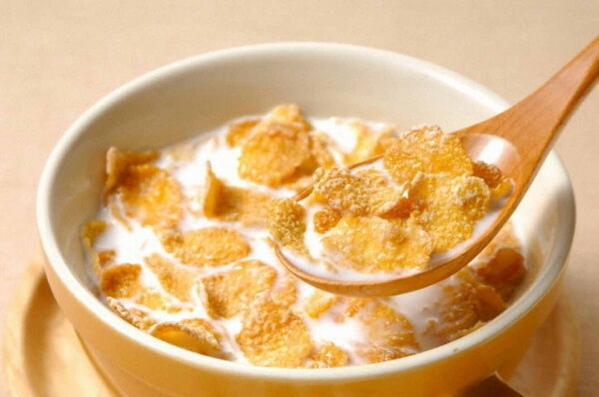

Хлопья с молоком

Описание
Это невероятно простой рецепт, который насытит вас, но не сильно. У простоты приготолвения есть своя цена...
Ингредиенты
Порядок приготовления
- Налейте молоко в глубокую тарелку. Из плоской оно выльется.
- Разогрейте молоко по вкусу.
- Насыпьте хлопья в теплое молоко и пермешайте.